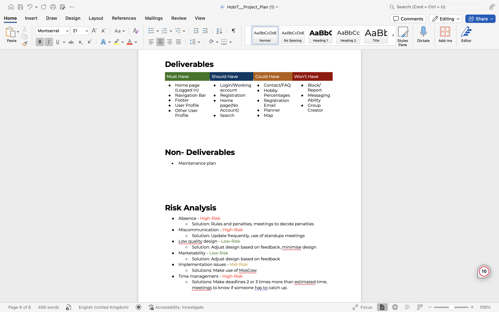
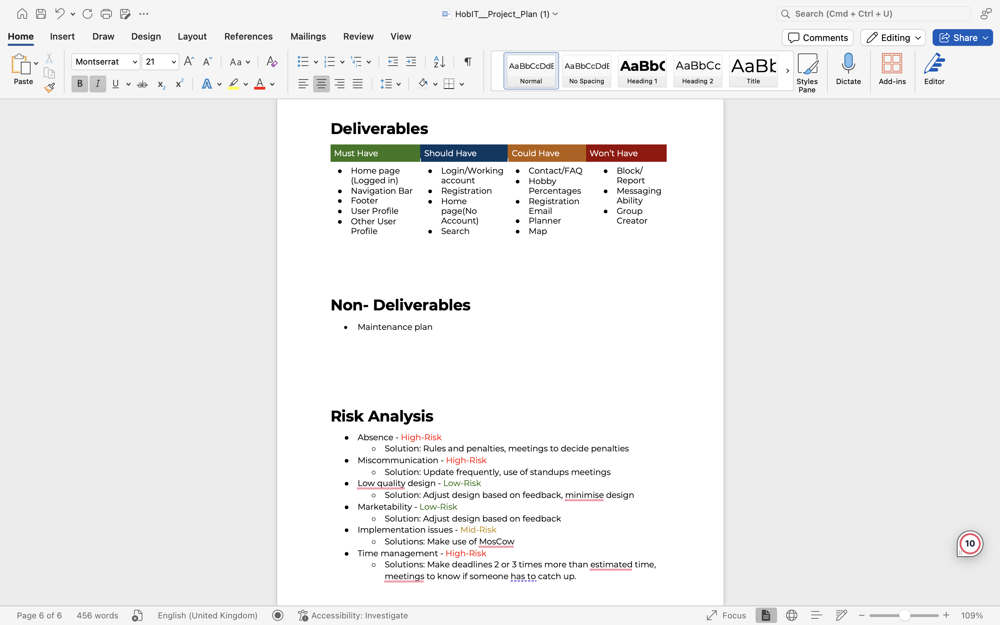

Research
1. Portfolio: First, I went to other platforms like Dribbble, Pinterest, and TikTok. I found inspiration on Pinterest, but I couldn’t fully replicate it. However, it gave me the idea for the heading in my portfolio to move when you scroll and to go behind the mountains. When I was small, I really liked Adventure Time, so I decided to base my portfolio on that. I used ChatGPT to polish small details. For example, my heading didn’t scroll smoothly, so I had to search for a solution, and now I use this tool when needed. On TikTok, there were many ideas, but for my learning outcomes page, I was inspired by Dribbble when I was searching for “my project” ideas. I added a nice background, and after receiving feedback, I changed the background color on my landing page too.
2. Project Plan: We attended lectures for our project plan and received feedback to improve it. Initially, we defined the current situation, identified the problem, and proposed our solution in our project plan. Following this, we conducted a brainstorming session to create a MoSCoW table. Using this table, we prioritized features, distinguishing between essential and optional ones to develop later, if time allowed. However, after finalizing the project plan, our group experienced a decline in motivation. While other teams progressed with their Figma prototypes, we lagged behind.
A motivational push from our teacher became a clear signal that we needed to regain motivation. On that same day, we developed our paper prototype, established Trello boards, and set team agreements. In Trello, we outlined small tasks to keep us on track, and our team agreements included penalties to enforce punctuality and improve communication.
3. Presentation: I wanted to make a cool presentation for the project, so after the storytelling lecture with our teacher Chris, I had the idea to make it like an actual book where we can tell the story of our project. I found how to do it on YouTube, and for the "our solution" section, I used my knowledge from past presentations and created it using morphing transitions. I also used AI to make the pictures in the story. I wanted a good opening and closing to keep my audience's attention, so I made a trending video with cats from TikTok and used our classroom as the background.
 
